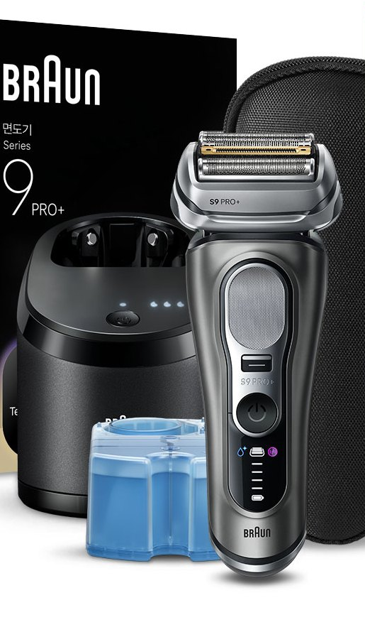
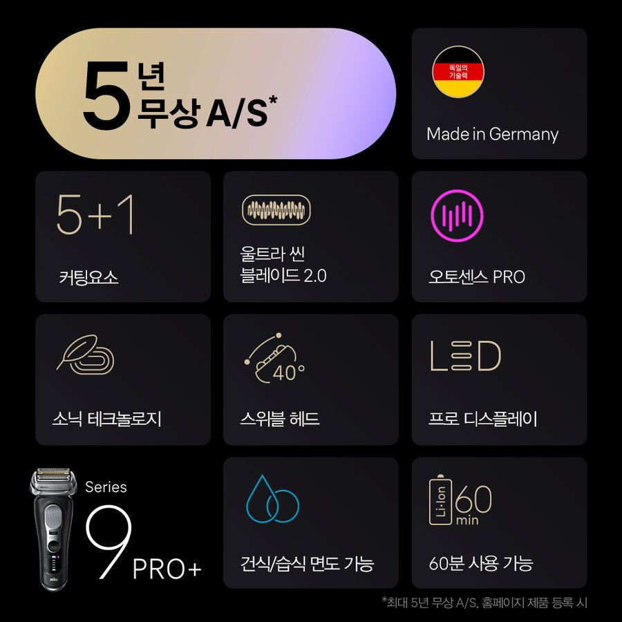
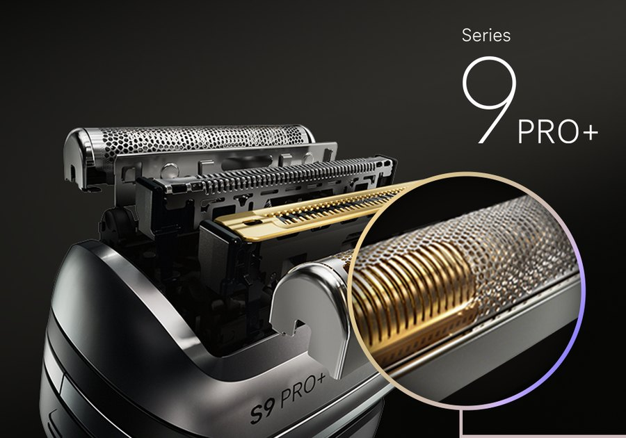
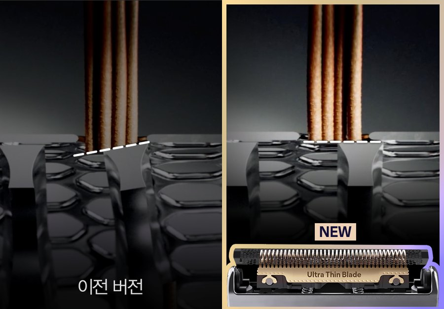
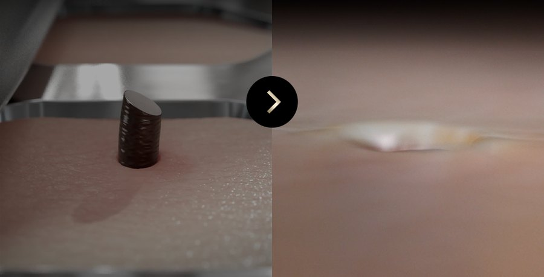

Braun Series 9 PRO+ 9665cc Review: Overview
This Braun Series 9 PRO+ 9665cc review looks at Braun's top foil electric shaver, the graphite 9665cc with the 6-in-1 SmartCare Center, as sold by Braun's official brand store on Naver in Korea. It is one of the most-searched premium shavers in Korea, where many men shave daily before long commutes.
A busy morning shave usually leaves two problems: stubble left under the chin and neck, and a cleaning routine that never quite happens. We checked Braun's official product information and the Korean store listing to see how the Series 9 PRO+ handles both — the cutting system and 40-degree head for closeness, and the cleaning station for the daily routine.
"Fewer strokes under the chin, and a station that cleans and charges the shaver while you get dressed."

The Cutting System: 5+1 Elements and Ultra Thin Blades
- 5+1 synchronized elements: Braun lists a Direct&Cut blade, ProTrimmer, skin-skimming OptiFoil, protective SkinGuard and a titanium-coated ProLift blade working together in each stroke.
- Ultra Thin Precision Blades: Braun says the new, more stable thin blade cuts more efficiently than any previous Series 9; the Korean listing calls it Ultra Thin Blade 2.0 and claims a shave down to about -0.01 mm below the skin surface (Braun internal test).
- Pro SensoAdapt: sensors read beard density around 300 times per second and adjust motor power automatically, so thin areas get less force.
- 40-degree flexible head: the head tilts forward and back to stay in contact with the jawline, under the chin and on the neck.


The Daily Routine: SmartCare Center, Display and Battery
The 6-in-1 SmartCare Center is what separates the 9665cc from cheaper Series 9 bundles. Put the shaver in head-down, press one button, and the station selects a programme, cleans, lubricates, dries and charges it. The cleaning fluid comes in replaceable cartridges, so budget for refills.
On the handle, a performance-assistant LED display shows battery level and maintenance prompts. Braun quotes up to 60 minutes of runtime, roughly a few weeks of daily shaving for most users, with a one-hour full charge and a 5-minute quick charge. The shaver is made in Germany and is fully waterproof for shower use.


Key Specs
| Spec | Braun Series 9 PRO+ 9665cc |
|---|---|
| Type | Foil electric shaver, wet & dry |
| Cutting system | 5+1: Direct&Cut blade, ProTrimmer, OptiFoil, SkinGuard, titanium-coated ProLift blade |
| Blades | Ultra Thin Precision Blades ("Ultra Thin Blade 2.0" in Korea) |
| Power control | Pro SensoAdapt, beard density read ~300x per second |
| Head | 40-degree flexible head |
| Battery | Li-ion, up to 60 min; ~1 h full charge; 5-min quick charge |
| Voltage | 100–240 V, 50/60 Hz |
| Cleaning | 6-in-1 SmartCare Center with cleaning cartridge |
| Water resistance | 100% waterproof shaver |
| Display | Performance assistant LED display |
| In the box | Shaver, SmartCare Center, cartridge, travel case, charger, brush |
| Made in | Germany |
| Korean listing | Braun official brand store on Naver, graphite, 389,000 KRW at time of writing |
Specifications are from Braun's official product pages for the Series 9 PRO+ 9665cc/9665cce and the Korean store listing; they were not lab-measured by us. Warranty terms (Braun advertises up to 5 years with registration) depend on your country.
How It Compares
| Braun Series 9 PRO+ 9665cc | Braun Series 9 PRO+ without station | Mid-range foil shaver | |
|---|---|---|---|
| Cutting system | 5+1, Ultra Thin blades | 5+1, Ultra Thin blades | 3–4 elements |
| Cleaning | Automatic 6-in-1 station | Rinse by hand | Rinse by hand |
| Runtime | Up to 60 min | Up to 60 min | About 45–50 min |
| Best for | Daily shavers who want zero upkeep | Travellers, lower cost | Light beards, budget |
Pros & Cons
| Pros | Cons |
|---|---|
| 5+1 system with Ultra Thin blades for fewer passes | Premium price (389,000 KRW in Korea) |
| 40-degree head reaches chin and neck | Cleaning cartridges are an ongoing cost |
| SmartCare Center cleans, dries and charges automatically | Station takes counter space in small bathrooms |
| Waterproof, 60-minute battery, 100–240 V charger | Foils and cutters need replacing over time |
Who It Suits (and Who Should Skip It)
- Yes: Men who shave every day and want a close result under the chin and neck with fewer strokes.
- Yes: Anyone who never cleans their shaver properly — the station does it for you.
- Yes: Frequent travellers who need a worldwide-voltage charger and a travel case.
- No: Light-beard users who only shave a few times a week; a cheaper Series model will do.
- No: People who prefer a rotary shaver or a beard trimmer for stubble styles.
Braun Series 9 PRO+ 9665cc FAQ
What does the Braun Series 9 PRO+ 9665cc include?
According to Braun's official product information, the box contains the Series 9 PRO+ shaver, the 6-in-1 SmartCare Center (cleaning and charging station), one cleaning cartridge, a travel case, a charger and a cleaning brush. The Korean listing we reviewed is the graphite colour sold by Braun's official brand store on Naver.
How long does the battery last?
Braun lists up to 60 minutes of cordless shaving from the Li-ion battery, a full charge in about one hour and a 5-minute quick charge for a single shave. The charger accepts 100–240 V, so it works in Korea, the U.S. and most travel destinations with a plug adapter.
Can I use it in the shower or with foam?
Yes. Braun describes the Series 9 PRO+ as 100% waterproof and tested under water, for wet or dry shaving with or without foam or gel. Only the shaver is waterproof — keep the SmartCare Center and charger dry.
What is new compared with older Series 9 models?
Braun says the Series 9 PRO+ uses Ultra Thin Precision Blades (marketed in Korea as Ultra Thin Blade 2.0), a 5+1 system of Direct&Cut blade, ProTrimmer, OptiFoil, SkinGuard and a titanium-coated ProLift blade, and Pro SensoAdapt, which reads beard density about 300 times per second and adjusts power. The head pivots 40 degrees for the chin and neck.
Is the Korean 9665cc the same as the shaver sold on Amazon in the U.S.?
The 9665cc is the version sold in Korea, Japan and Europe (in Europe as 9665cce). U.S. retailers sell Series 9 PRO+ models with the SmartCare Center under different model numbers and colours, so check the exact model, plug and included accessories on the Amazon listing. The Korean Naver price at the time of writing was 389,000 KRW.
Braun Series 9 PRO+ with SmartCare Center
Check current U.S. models and pricing for the Series 9 PRO+ with the SmartCare Center on Amazon (the Korean 9665cc is sold via Braun's official store on Naver).